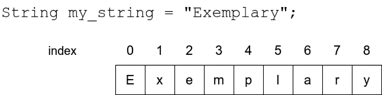
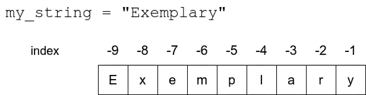
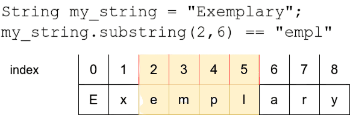
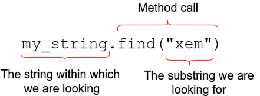

Treballar amb cadenes
Objectius d’aprenentatge
- Utilitzar els operadors
+i*amb cadenes de text - Esbrinar la llargada d'una cadena de text
- Entendre l'indexació de cadenes
- Buscar subcadenes dins d'una cadena de text
Operacions amb cadenes
Les cadenes de text es poden combinar, o concatenar, amb l’operador +:
inici = "ex"
final = "emple"
paraula = inici + final
print(paraula)exemple
L’operador * també es pot utilitzar amb una cadena de text, quan l’altre operand és un enter. La cadena es repeteix tantes vegades com indica l’enter. Per exemple:
paraula = "banana"
print(paraula * 3)bananabananabanana
Combinant operacions amb cadenes amb un bucle podem escriure un programa que dibuixa una piràmide:
n = 10 # nombre de capes de la piràmide
fila = "*"
while n > 0:
print(" " * n + fila)
fila += "**"
n -= 1
*
***
*****
*******
*********
***********
*************
***************
*****************
*******************
La comanda print dins del bucle escriu una línia que comença amb n espais, seguida del contingut de la variable fila. Després s’hi afegeixen dos asteriscs més a fila, i el valor de n es redueix en 1.
Exercici: Cadena multiplicada
Escriu un programa que demani a l’usuari una cadena de text i una quantitat. El programa ha d’imprimir la cadena tantes vegades com s’hagi indicat, tot seguit en una sola línia, sense espais ni símbols addicionals.
Introdueix una cadena: hola Introdueix una quantitat: 4 holaholaholahola
La longitud i els índexs d’una cadena
La funció len retorna el nombre de caràcters d’una cadena, que sempre és un valor enter. Per exemple, len("hola") retorna 4.
El següent programa demana una cadena i la subratlla amb guions:
entrada = input("Introdueix una cadena: ")
print(entrada)
print("-" * len(entrada))Introdueix una cadena: Hola món Hola món --------
La longitud d’una cadena inclou tots els caràcters, incloent els espais. Per exemple, la longitud de adeu adeu és 9.
Exercici: La cadena més llarga
Escriu un programa que demani dues cadenes de text i imprimeixi quina és la més llarga. Si tenen la mateixa longitud, el programa ha d’imprimir "Les cadenes tenen la mateixa longitud".
Introdueix la cadena 1: hola Introdueix la cadena 2: holaaa holaaa és la cadena més llarga
Introdueix la cadena 1: hola Introdueix la cadena 2: adeu Les cadenes tenen la mateixa longitud
Com que les cadenes de text són essencialment seqüències de caràcters, qualsevol caràcter individual d'una cadena també es pot recuperar. L'operador [] troba el caràcter amb l'índex especificat dins dels claudàtors. L'índex es refereix a una posició en la cadena, comptant des de zero. El primer caràcter de la cadena té l'índex 0, el segon caràcter té l'índex 1, i així successivament.

entrada = input("Introdueix una cadena: ")
print(entrada[0])
print(entrada[1])
print(entrada[3])Introdueix una cadena: mico m i o
El primer caràcter té índex 0. L’últim caràcter està en la posició len(cadena) - 1:
entrada = input("Introdueix una cadena: ")
print("Primer caràcter: " + entrada[0])
print("Últim caràcter: " + entrada[len(entrada) - 1])Introdueix una cadena: prova Primer caràcter: p Últim caràcter: a
També es poden recórrer tots els caràcters amb un bucle while:
entrada = input("Introdueix una cadena: ")
index = 0
while index < len(entrada):
print(entrada[index])
index += 1Introdueix una cadena: test t e s t
També podeu utilitzar l'indexació negativa per accedir als caràcters comptant des del final de la cadena. L'últim caràcter d'una cadena es troba a l'índex -1, el penúltim caràcter a l'índex -2, i així successivament. Podeu pensar en input_string[-1] com una forma abreviada de input_string[len(input_string) - 1].

entrada = input("Introdueix una cadena: ")
print("Primer caràcter: " + entrada[0])
print("Últim caràcter: " + entrada[-1])Introdueix una cadena: prova Primer caràcter: p Últim caràcter: a
IndexError: string index out of range
Si intentem accedir a un índex que no existeix, es produeix un error IndexError: string index out of range:
entrada = input("Introdueix una cadena: ")
print("El desè caràcter: " + entrada[9])Introdueix una cadena: programació El desè caràcter: c
Introdueix una cadena: python Traceback (most recent call last): File "", line 1, in IndexError: string index out of range
Error IndexError: string index out of range
Si intentes accedir a un índex que no existeix dins d’una cadena, Python generarà un error IndexError: string index out of range. Això passa quan l’índex indicat és més gran que la longitud de la cadena menys 1.
entrada = input("Introdueix una cadena: ")
print("Desè caràcter: " + entrada[9])Introdueix una cadena: introducció Desè caràcter: i
Introdueix una cadena: python Traceback (most recent call last): File "", line 1, in IndexError: string index out of range
Un error com aquest també pot ser causat per un bug al codi, per exemple intentant accedir a l’últim caràcter amb len(cadena) en lloc de len(cadena) - 1:
entrada = input("Introdueix una cadena: ")
print("Últim caràcter: " + entrada[len(entrada)])Per evitar errors, sempre és recomanable comprovar la longitud de la cadena abans d’accedir als índexs:
entrada = input("Introdueix una cadena: ")
if len(entrada) > 0:
print("Primer caràcter: " + entrada[0])
else:
print("La cadena és buida. No hi ha primer caràcter.")Exercici: Del final a l’inici
Escriu un programa que demani una cadena de text i imprimeixi tots els caràcters en ordre invers, un per línia.
Introdueix una cadena: hola a l o h
Exercici: Segon i penúltim caràcter
Escriu un programa que comprovi si el segon caràcter i el penúltim caràcter d’una cadena són iguals.
Introdueix una cadena: python El segon i el penúltim caràcter són diferents
Introdueix una cadena: pascal El segon i el penúltim caràcter són a
Exercici: Una línia de caràcters #
Escriu un programa que imprimeixi una línia de caràcters #, amb l'amplada indicada per l'usuari.
Amplada: 3 ###
Amplada: 8 ########
Exercici: Un rectangle de caràcters #
Modifica l’exercici anterior perquè també demani l’alçada i imprimeixi un rectangle de caràcters #.
Amplada: 10 Alçada: 3 ########## ########## ##########
Exercici: Subratllat
Escriu un programa que demani cadenes en un bucle i imprimeixi cada cadena subratllada amb -. L’execució finalitza quan l’usuari introdueix una cadena buida.
Introdueix una cadena: Hola món Hola món --------
Introdueix una cadena: Prova Prova -----
Introdueix una cadena:
Exercici: Alineació a la dreta
Escriu un programa que demani una cadena i la imprimeixi amb exactament 20 caràcters. Si la cadena és més curta, la línia es completa amb * al principi. Pots asumir que l'entrada serà com a molt 20 caràcters llarga.
Introdueix una cadena: python **************python
Introdueix una cadena: alongerstring *******alongerstring
Introdueix una cadena: averyverylongstring *averyverylongstring
Exercici: Paraula emmarcada
Escriu un programa que demani una cadena i imprimeixi un marc de * amb la paraula al centre. L’amplada del marc ha de ser de 30 caràcters. Podeu assumir que la cadena d'entrada sempre cabrà dins del marc.
Si la longitud de la cadena d'entrada és un nombre senar, podeu imprimir la paraula en qualsevol de les dues possibles ubicacions centrals.
Paraula: testing ****************************** * testing * ******************************
Paraula: python ****************************** * python * ******************************
Subcadenes i talls
Una subcadena d'una cadena és una seqüència de caràcters que forma part de la cadena. Per exemple, la cadena "exemple" conté les subcadenes "exem", "emp" i "ple", entre d'altres. En la programació Python, el procés de seleccionar subcadenes normalment s'anomena slicing, i una subcadena sovint es refereix com una slice (llesca) de la cadena.
Si coneixeu els índexs d'inici i final de la llesca que voleu extreure, podeu fer-ho amb la notació [a:b]. Això vol dir que la llesca comença a l'índex a i acaba a l'últim caràcter abans de l'índex b - és a dir, inclou el primer, però exclou l'últim. Podeu pensar els índexs com a línies separadores dibuixades al costat esquerre del caràcter indexat

entrada = "presumptuós"
print(entrada[0:3])
print(entrada[4:8])
# Si el primer índex està buit, s'assumeix que és 0
print(entrada[:3])
# Si el segón índex està buit, s'assumeix que és la longitud de la cadena - 1
print(entrada[4:])pre umpt pre umptuós
En Python, els intervals [a:b] són semitancats: inclouen el caràcter inicial però no el final. Això es deu a una convenció heretada d'altres llenguatges de programació.
En un principi ens pot semblar antiintuïtiu, però te tambés els seus avantatges, com poder calcular la longitud d'una llesca fent b-a. De totes maneres és important recordar, que l'index b sempre estarà exclòs de la nostra llesca
Exercici: Subcadenes (part 1)
Escriu un programa que demani una cadena i imprimeixi totes les subcadenes que comencen amb el primer caràcter, de la més curta a la més llarga.
Introdueix una cadena: test t te tes test
Exercici: Subcadenes (part 2)
Escriu un programa que demani una cadena i imprimeixi totes les subcadenes que acaben amb l’últim caràcter, de la més curta a la més llarga.
Introdueix una cadena: test t st est test
Cercar subcadenes
L’operador in permet saber si una cadena conté una determinada subcadena. L’expressió a in b retorna True si b conté a.
entrada = "test"
print("t" in entrada)
print("x" in entrada)
print("es" in entrada)
print("ets" in entrada)True False True False
El programa següent permet a l’usuari cercar subcadenes dins d’una cadena definida dins del programa:
cadena = "perpendicular"
while True:
subcadena = input("Què busques? ")
if subcadena in cadena:
print("Trobada")
else:
print("No trobada")Què busques? perp Trobada Què busques? abc No trobada Què busques? pen Trobada ...
Exercici: Conté vocals
Escriu un programa que demani una cadena i indiqui si conté les vocals a, e o o.
Podeu assumir que l'entrada estarà completament en minúscules.
Introdueix una cadena: hola a trobada e no trobada o trobada
Introdueix una cadena: adeu a trobada e trobada o no trobada
El mètode find
L'operador in retorna un valor booleà, de manera que només ens dirà si una subcadena existeix en una cadena, però no serà útil per esbrinar on es troba exactament.
En lloc d'això, el mètode de cadenes de Python find es pot utilitzar per a aquest propòsit. Aquest pren la subcadena buscada com a argument i retorna o bé el primer índex on es troba, o bé -1 si la subcadena no es troba dins de la cadena.

entrada = "test"
print(entrada.find("t"))
print(entrada.find("x"))
print(entrada.find("es"))
print(entrada.find("ets"))0 -1 1 -1
cadena = "perpendicular"
while True:
subcadena = input("Què busques? ")
index = cadena.find(subcadena)
if index >= 0:
print(f"Trobada a l'índex {index}")
else:
print("No trobada")Què busques? perp Trobada a l'índex 0 Què busques? abc No trobada Què busques? pen Trobada a l'índex 3 ...
Exercici: Primera subcadena
Escriu un programa que demani a l'usuari una cadena de text i un caràcter individual. El programa haurà d'imprimir la primera llesca de 3 caràcters que comencin amb el caràcter especificat per l'usuari. Pots assumir que la cadena d'entrada té com a mínim tres caràcters.
El programa ha d'imprimir tres caràcters o, en cas contrari, no res. Para especial atenció quan queden menys de dos caràcters a la cadena. En aquest cas, no s'hauria d'imprimir res per evitar cap error d'indexació durant l'execució del programa.
Introdueix una paraula: mamut Introdueix un caràcter: m mam
Introdueix una paraula: plàtan Introdueix un caràcter: l làn
Introdueix una paraula: tomàquet Introdueix un caràcter: x
Exercici: Totes les subcadenes
Fes una versió ampliada del programa anterior, que imprimeixi totes les subcadenes que tinguin tres caràcters de llargada i que comencin amb el caràcter especificat per l'usuari. Pots assumir que la cadena d'entrada té com a mínim tres caràcters de llargada.
Introdueix una paraula: mamut Introdueix un caràcter: m mam mut
Introdueix una paraula: protocols Introdueix un caràcter: o oto oco ols
Pista: Aquest exemple et pot donar una idea de com s'hauria de tractar l'exercici
paraula = input("Paraula: ")
while True:
if len(paraula) == 0:
break
print(paraula)
paraula = paraula[2:]Introdueix una paraula: mamut mamut mut t
Exercici: La segona aparició
Escriu un programa que trobi la segona ocurrència d'una subcadena. Si no hi ha una segona ocurrència (o ni tan sols una primera), el programa ha d'imprimir un missatge adequadament. En aquest exercici, les ocurrències no poden solapar-se. Per exemple, en la cadena "aaaa" la segona ocurrència de la subcadena "aa" és a l'índex 2.
Introdueix una cadena: abcabc Introdueix una subcadena: ab La segona aparició de la subcadena és a l’índex 3.
Introdueix una cadena: metodologia Introdueix una subcadena: o La segona aparició de la subcadena és a l’índex 5.
Introdueix una cadena: aybabtu Introdueix una subcadena: ba La subcadena no apareix dues vegades dins la cadena.
Conceptes clau
- Concatenació: combinar cadenes amb l'operador
+. - Repetició: multiplicar cadenes amb l'operador
*i un enter. - Longitud: esbrinar nombre de caràcters amb
len(). - Indexació: accedir a caràcters individuals amb
[]i índexs numèrics. - Indexació negativa: accedir des del final amb índexs negatius com
-1. - IndexError: error quan s'intenta accedir a un índex que no existeix.
- Subcadenes (llesques): extreure parts d'una cadena amb
[inici:fi]. - Cerca amb in: comprovar si una subcadena existeix amb l'operador
in. - Cerca amb find(): trobar la posició d'una subcadena amb
find().